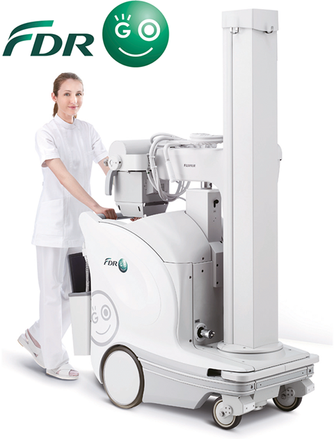
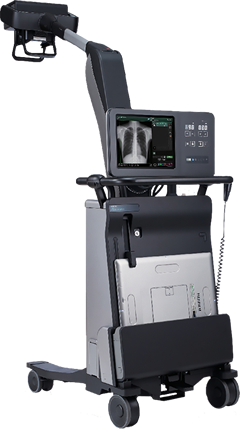

Fdr go

Registro Sanitario: 0085E2015 SSA
DESCRIPCIÓN:
FDR GO es considerado un sistema de rayos X móvil, el cual utiliza tecnología digital para capturar, mostrar y manipular imágenes. El diseño portátil y la capacidad de funcionar con baterías recargables permite a un solo miembro del personal transportar el sistema a cualquier ubicación de un edificio. El sistema se suele utilizar para realizar radiografías de rayos X junto a la cama del paciente, así como radiografías durante procedimientos quirúrgicos.

Registro Sanitario: 1116E2017 SSA
FDR Nano: Diseñando un flujo de trabajo eficaz en cualquier momento y lugar.
FUJIFILM ofrece una nueva solución de radiología digital móvil compacta, la cual está diseñada para solucionar los problemas que se enfrentan los especialistas de la salud en su día a día.
Sistema ultrasensible.
Nueva tecnología de procesamiento de imágenes.
Virtual Grid (VG).
Tubo pequeño de rayos-X enfocado al sistema ultra sensible.
Tamaño pequeño y ligero.
Listo para usarse en cualquier momento y en cualquier lugar.
Rápida visualización durante el tratamiento.
CARACTERÍSTICAS:
- Ofrece tecnología de dirección asistida que permite desplazar el sistema de forma sencilla y silenciosa.
- Diseño compacto, ofreciendo excelente visibilidad de avance que permite desplazarse libremente incluso por espacios reducidos.
- Proporciona una imagen de referencia en aproximadamente 2 segundos, lo que permite la confirmación de la imagen.
- Programas anatómicos.
- Luz indicadora de estado.
- El sistema ofrece tres modos de desplazamiento: modo de desplazamiento normal, el modo de desplazamiento lento o los botones de movimiento superlento.
- Posee un detector de obstrucciones.
ESPECIFICACIONES TÉCNICAS:
Generador de alta tensión.
Potencia máxima: 32 kW.
Voltaje del tubo: 40-133 kV (incrementos de 1 kV).
Corriente del tubo: Máx. 400 mA.
Producto corriente tiempo máx: 320 mAs.
Tiempo de irradiación nominal mínimo: 1 ms.
Tamaño del punto focal: 0.7/1.3 mm.
Capacidad calorífica del ánodo: 300 kHU.
Dimensiones generales:
Ancho total: 580 mm.
Longitud total: 1220 mm.
Dos tipos de altura: 1930 y 1780 mm.
Peso: 460 kg.
Velocidad máxima: Aprox. 5 km/hr.
DATOS COMPLEMENTARIOS: En FUJIFILM de México queremos convertirnos en su mejor aliado, es por eso que estamos comprometidos con nuestros clientes y ofrecemos el mejor servicio posventa.
FUJIFILM DE MÉXICO, S.A. de C.V.
Teléfono: (55) 5263-5500
e-mail: imagenologia@fujifilm.com.mx
www.fujifilm.com.mx